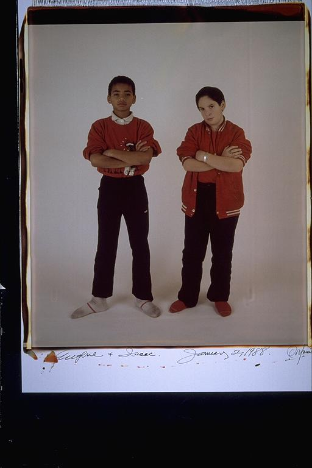

Aldo: At this time, these two were best friends. Isaac and Eugene used to hang out all the time together. They were really inseparable. It wasn't until a few years later that I began to hang out with both of them.
Eugene: "The famous dirty sock picture" -- I was wearing one of my sister's sweatshirt hand-me-downs, and from the looks of it I had one of my mother's do-it-at-home haircuts. My pants sure were tight. I remember when Isaac got his silver ID bracelet. And Isaac and I had his first kiss with Sara R, and she gave him that Lion Ring which he still has to this day. I later inherited the red jacket he is wearing for my "name jacket," and Isaac got his black and gold name jacket, speaking of black and gold, that makes me think of Isaac's "Smile" flag, in kindergarten in Valarie's class.
Isaac: Eugene and I met in the sandbox in kindergarten. There have been times when we didn't spend much time together, but that really hasn't hurt our friendship. He looks kind of sad in this one. I look a little fat. I consider Eugene to be the brother I never had. We don't always see eye to eye, but I know that when things fall apart, he'll be there. I'd do anything for him. Aldo too. But not Casey. He's on his own. (Just kidding, Case)
